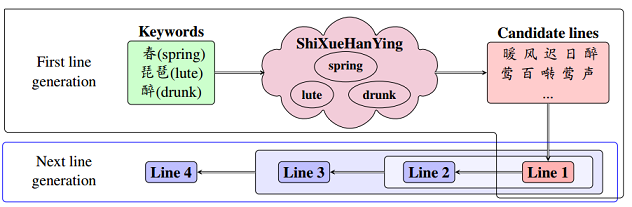
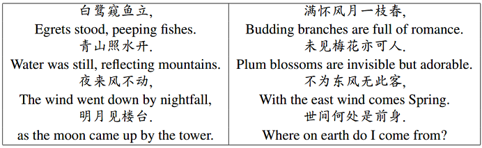
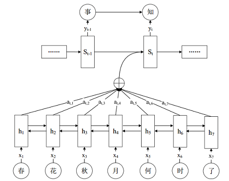
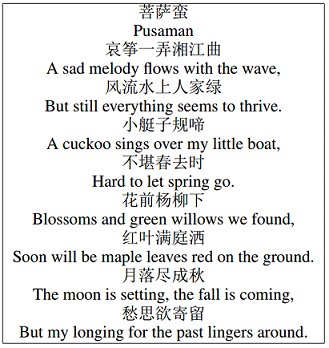
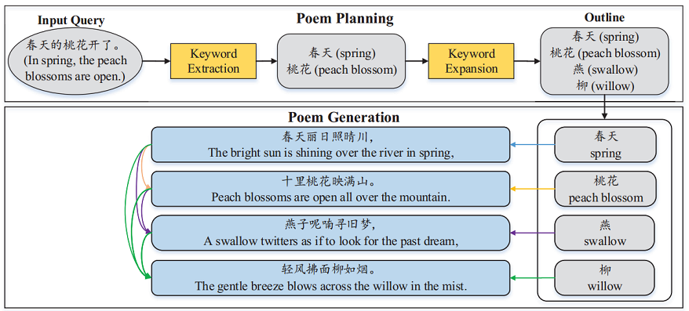
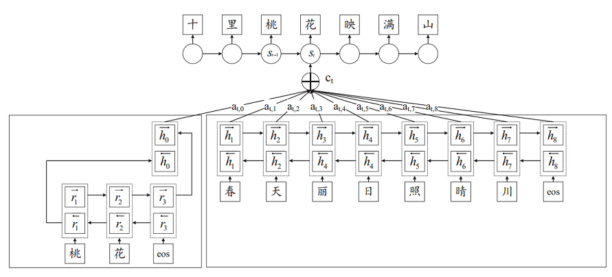
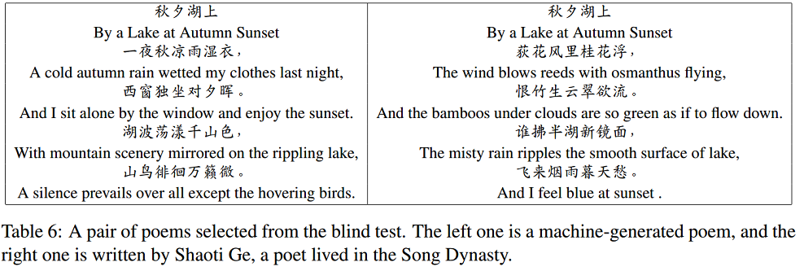
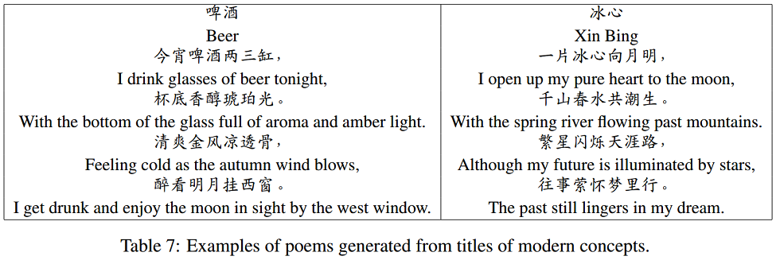
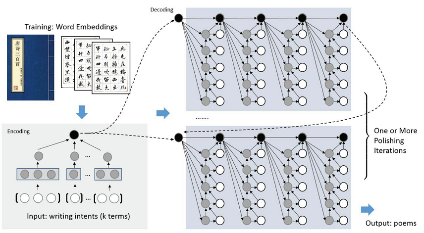
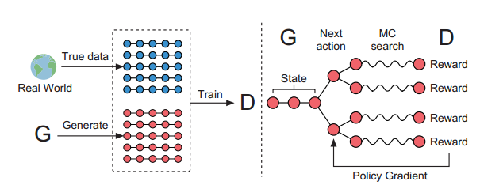

PaperWeekly 第二十三期
引言
什么是艺术？
机器的作品能否叫艺术？
机器能否取代艺术家？
这些问题，相信不同的人，会有不同的答案。很多人认为机器生成的作品只是简单的模仿人类，没有创造性可言，但是人类艺术家，不也是从模仿和学习开始的吗？本文是一篇机器诗歌生成的综述文章，希望能增进大家对这个领域的了解。
基于传统方法的诗歌生成
诗歌是人类文学皇冠上的明珠。我国自《诗经》以后，两千年来的诗篇灿若繁星。让机器自动生成诗歌，一直是人工智能领域一个有挑战性的工作。机器诗歌生成的工作，始于20世纪70年代。传统的诗歌生成方法，主要有以下几种：
- Word Salada（词语沙拉）：最早期的诗歌生成模型，只是简单将词语进行随机组合和堆砌而不考虑语义语法要求。
- 基于模板和模式的方法：基于模板的方法类似于完形填空，将一首现有诗歌挖去一些词，作为模板，再用一些其他词进行替换，产生新的诗歌。这种方法生成的诗歌在语法上有所提升，但是灵活性太差。因此后来出现了基于模式的方法，通过对每个位置词的词性，韵律平仄进行限制，来进行诗歌生成。
- 基于遗传算法的方法：周昌乐等[1]提出并应用到宋词生成上。这里将诗歌生成看成状态空间搜索问题。先从随机诗句开始，然后借助人工定义的诗句评估函数，不断进行评估，进化的迭代，最终得到诗歌。这种方法在单句上有较好的结果，但是句子之间缺乏语义连贯性。
- 基于摘要生成的方法：严睿等[2]将诗歌生成看成给定写作意图的摘要生成问题，同时加入了诗歌相关的一些优化约束。
- 基于统计机器翻译的方法：MSRA的何晶和周明[3]将诗歌生成看成一个机器翻译问题，将上一句看成源语言，下一句看成目标语言，用统计机器翻译模型进行翻译，并加上平仄押韵等约束，得到下一句。通过不断重复这个过程，得到一首完整的诗歌。
基于深度学习技术的诗歌生成
传统方法非常依赖于诗词领域的专业知识，需要专家设计大量的人工规则，对生成诗词的格律和质量进行约束。同时迁移能力也比较差，难以直接应用到其他文体（唐诗，宋词等）和语言（英文，日文等）。随着深度学习技术的发展，诗歌生成的研究进入了一个新的阶段。
RNNLM
基于RNN语言模型[4]的方法，将诗歌的整体内容，作为训练语料送给RNN语言模型进行训练。训练完成后，先给定一些初始内容，然后就可以按照语言模型输出的概率分布进行采样得到下一个词，不断重复这个过程就产生完整的诗歌。Karpathy有一篇文章，讲的很详细：http://karpathy.github.io/2015/05/21/rnn-effectiveness/
Chinese Poetry Generation with Recurrent Neural Networks
RNNPG模型[5]，首先由用户给定的关键词生成第一句，然后由第一句话生成第二句话，由一，二句话生成第三句话，重复这个过程，直到诗歌生成完成。模型的模型由三部分组成：
Convolutional Sentence Model（CSM）：CNN模型，用于获取一句话的向量表示。
Recurrent Context Model(RCM)：句子级别的RNN，根据历史生成句子的向量，输出下一个要生成句子的Context向量。
Recurrent Generation Model(RGM)：字符级别RNN，根据RCM输出的Context向量和该句之前已经生成的字符，输出下一个字符的概率分布。解码的时候根据RGM模型输出的概率和语言模型概率加权以后，生成下一句诗歌，由人工规则保证押韵。
模型结构如下图：

模型生成例子如下图：

Chinese Song Iambics Generation with Neural Attention-based Model
模型[6]是基于attention的encoder-decoder框架，将历史已经生成的内容作为源语言序列，将下一句要生成的话作为目标语言序列。需要用户提供第一句话，然后由第一句生成第二句，第一，二句生成第三句，并不断重复这个过程，直到生成完整诗歌。 基于Attention机制配合LSTM，可以学习更长的诗歌，同时在一定程度上，可以提高前后语义的连贯性。
模型结构如下图：

模型生成例子如下图：

Chinese Poetry Generation with Planning based Neural Network
模型[8]是一个端到端的模型，不需要专家领域知识。它试图模仿人类写作前先规划一个写作大纲的过程。整个诗歌生成框架由两部分组成：规划模型和生成模型。
规划模型：将代表用户写作意图的Query作为输入，生成一个写作大纲。写作大纲是一个由主题词组成的序列，第i个主题词代表第i句的主题。
生成模型：基于encoder-decoder框架。有两个encoder,其中一个encoder处理主题词，另外一个encoder处理历史生成的句子，decoder负责生成下一句话。decoder生成的时候，利用Attention机制，对主题词和历史生成内容的向量一起做打分，由模型来决定生成的过程中各部分的重要性。
前面介绍的几个模型，用户的写作意图，基本只能反映在第一句，随着生成过程往后进行，后面句子和用户写作意图的关系越来越弱，就有可能发生主题漂移问题。而规划模型可以使用户的写作意图直接影响整首诗的生成，因此在一定程度上，避免了主题漂移问题，使整首诗的逻辑语义和情感更为连贯。
总体框架图如下：

生成模型框架图如下：

诗歌图灵测试例子：

现代概念诗歌生成例子：

i, Poet: Automatic Poetry Composition through Recurrent Neural Networks with Iterative Polishing Schema
模型[7]基于encoder-decoder框架，一个比较有意思的地方，是想模拟人类写诗反复修改的过程，加入了打磨机制，通过反复迭代来提高诗歌生成质量。
encoder阶段：用户提供一个Query作为自己的写作意图,由CNN模型获取Query的向量表示。
decoder阶段：使用了hierarchical的RNN生成框架，由句子级别和词级别两个RNN组成。 句子级别RNN：输入句子向量表示，输出下一个句子的Context向量。字符级别RNN：输入Context向量和历史生成字符，输出下一个字符的概率分布。当一句生成结束的时候，字符级别RNN的最后一个向量，作为表示这个句子的向量，送给句子级别RNN。
总体框架图如下：

Generating Topical Poetry
模型[9]基于encoder-decoder框架，分为两步。先根据用户输入的关键词得到每句话的最后一个词，这些词都押韵且与用户输入相关。再将这些押韵词作为一个序列，送给encoder,由decoder生成整个诗歌。这种机制一方面保证了押韵，另外一方面，和之前提到的规划模型类似，在一定程度上避免了主题漂移问题。
SeqGAN: Sequence Generative Adversarial Nets with Policy Gradient
模型[10]将图像中的对抗生成网络，用到文本生成上。生成网络是一个RNN，直接生成整首诗歌。而判别网络是一个CNN。用于判断这首诗歌是人写的，还是机器生成的，并通过强化学习的方式，将梯度回传给生成网络。
模型框架图如下：

总结
从传统方法到深度学习，诗歌生成技术有了很大发展，甚至在一定程度上，已经可以产生普通人真假难辨的诗歌。但是目前诗歌生成技术，学习到的仍然只是知识的概率分布，即诗句内，诗句间的搭配规律。而没有学到诗歌蕴含思想感情。因此尽管生成的诗歌看起来有模有样，但是仍然感觉只是徒有其表，缺乏一丝人的灵性。
另外一方面，诗歌不像机器翻译有BLEU作为评价指标，目前仍然依赖人工的主观评价，缺乏可靠的自动评估方法，因此模型优化的目标函数和主观的诗歌评价指标之间，存在较大的gap，也影响了诗歌生成质量的提高。AlphaGo已经可以击败顶尖人类选手，但是在诗歌生成上，机器尚有很长的路要走。
参考文献
[1] 一种宋词自动生成的遗传算法及其机器实现
[2] i,Poet: Automatic Chinese Poetry Composition through a Generative Summarization Framework under Constrained Optimization
[3] Generating Chinese Classical Poems with Statistical Machine Translation Models
[4] Recurrent neural network based language model
[5] Chinese Poetry Generation with Recurrent Neural Networks
[6] Chinese Song Iambics Generation with Neural Attention-based Model
[7] i, Poet: Automatic Poetry Composition through Recurrent Neural Networks with Iterative Polishing Schema
[8] Chinese Poetry Generation with Planning based Neural Network
[9] Generating Topical Poetry
[10] SeqGAN: Sequence Generative Adversarial Nets with Policy Gradient